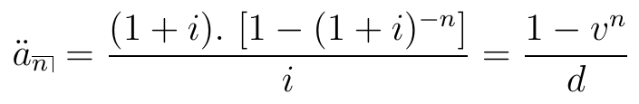
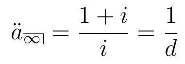
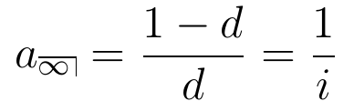
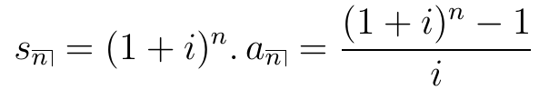

Matemática Financeira
taxa de juros e taxa de desconto
taxa efetiva e nominal
fluxo de pagamentos e anuidade certas
05 de maio de 2023
Aula de Hoje
Matemática Financeira
A Matemática Financeira lida com o valor do dinheiro no tempo.
Vamos ver uma revisão de algumas quantidades e conceitos básicos que precisaremos para avaliar pagamentos futuros.
Muitas dessas funções estão implementadas no R no pacote
lifecontingencies.

Taxa de Juros e Taxa de Desconto
Taxa de Juros
Um capital \(X\) irá valer \(A(t) = X \cdot (1+i)^t\) depois de \(t\) anos, se seguir a lei de juros compostos.
\(i\) é a taxa de juros efetiva anual, isto é, a quantidade que um investimento irá render após um ano, com juros pagos no final do ano.
\((1+i)^n\) é chamado de fator de acumulação.
Taxa de Desconto
E se o pagamento dos juros fosse feito antecipadamente (no começo do período)? Os juros recebidos seriam reinvestidos, gerando mais juros, que também seriam investidos… e assim sucessivamente.
Vamos chamar de taxa de juros antecipados ou taxa de desconto \(d\).
No final do período, o montante seria \(X + d. X + d^2.X + ... = X \left(\frac{1}{1-d}\right)\) (progressão geométrica).
A taxa de desconto que leva ao mesmo capital obtido com uma taxa de juros \(i\) é dada por:
\[ X \cdot (1+i) = X \cdot \left( \frac{1}{1-d} \right) \qquad\Rightarrow \qquad d = \frac{i}{1+i} \]
Taxa de Desconto
- Por exemplo, qual deve ser a taxa de juros antecipada (ou taxa de desconto) que leva ao mesmo fator de acumulação de uma taxa de juros de 5%?
No R:
0.05/(1+0.05)
## [1] 0.04761905
interest2Discount(i=0.05)
## [1] 0.04761905
Taxa de Desconto
- Também podemos ver a taxa de desconto como o valor descontado dos juros \(i\) a serem pagos no final do ano.
\[ d = \frac{i}{1+i} = i \, . \frac{1}{1+i} = i\,.(1-d)\]
Considere um capital investido de 1 unidade. O valor do juros antecipado \(d\) a ser pago é igual ao que renderia de juros postecipado \(i\) aplicado ao capital de \(1-d\).
Equivalentemente, o valor do juros postecipado \(i\) é igual ao que receberia de juros antecipado \(d\) aplicado ao capital de \(1+i\).
\[ i = \frac{d}{1-d} = d \, .(1+i) \qquad \Rightarrow \qquad (1-d) = \frac{1}{1+i} \]
Taxa nominal e efetiva
Juros pode ser pago em frequências maiores do que uma vez por período de tempo.
Essas frações do período em que os juros são pagos são chamadas de período de conversão.
Quando o período de conversão é igual à unidade de tempo básica, a taxa de juros (e a de desconto) recebe o nome de taxa efetiva.
Quando o período de conversão é diferente da unidade de tempo básica, a taxa de juros (e a de desconto) é chamada de taxa nominal.
Taxa nominal e efetiva
Seja \(i\) a taxa de juros efetiva anual.
Seja \(i^{(m)}\) a taxa de juros nominal anual, convertida em \(m\) vezes por ano.
Logo,
\[ \left( 1 + \frac{i^{(m)}}{m}\right)^m = (1+i) \]
\[ i^{(m)} = m . \left[ (1+i)^{1/m} - 1\right] \]
Taxa nominal e efetiva
## Taxa Nominal e Efetiva nominal2Real(i=0.06, k=12)
## [1] 0.06167781
real2Nominal(i=0.06, k=12)
## [1] 0.05841061
# converter taxa de desconto efetiva para nominal real2Nominal(i=0.04, k=12, type="discount")
## [1] 0.04075264
Relações úteis
- Valor do montante de 1 unidade acumulado pelo tempo \(t\):
\[A(t) = (1+i)^t = \left( 1 + \frac{i^{(m)}}{m} \right)^{t.m} = \left(1 - \frac{d^{(m)}}{m} \right)^{-t.m} = (1-d)^{-t} = v^{-t} \]
onde \(i\) e \(d\) são as taxas de juros e desconto efetivas, e \(i^{(m)})\) e \(d^{(m)}\) são as taxas nominais.
Exercício 1
Encontre o valor presente de $1.000 a ser pago no final de 6 anos com juros de 6% ao ano, pago antecipadamente e convertido semestralmente.
1000*(1-0.06/2)^12
## [1] 693.8424
annualDiscount = nominal2Real(i=0.06, k=2, type="discount") i = discount2Interest(annualDiscount) presentValue(cashFlows=1000, timeIds=6, interestRates=i, probabilities=1)
## [1] 693.8424
Fluxo de Pagamentos
Fluxo de Pagamentos
Muitas vezes precisamos considerar mais de um pagamento ou pagamentos que são feitos periodicamente.
Valor Presente: capital em valor atual correspondente a uma série de pagamentos feitos em diferentes tempos.
Permite comparar em uma mesma base diferentes fluxos de pagamentos. Isso é, podemos avaliar o retorno de diferentes investimentos.
Fluxo de Pagamentos
\[VP = \sum_{j=1}^K P_j \,(1+i_j)^{-t_j} \]
onde \(P_j\) é o valor do pagamento e \(i_j\) é a taxa de juros correspondentes ao tempo \(t_j\).
- O pacote
lifecontingenciestambém tem funções para calcular Valor Presente de fluxos de pagamentos determinísticos.
Exercício 2:
Usando a função presentValue, verifique qual investimento é melhor (com \(i=5\%\)):
Pagar $500 agora e receber $100, $200, $300, $250 no final dos próximos quatro anos;
Pagar $700 agora e receber $1000 no final do segundo ano.
Exercício:
pg1 = c(-500,100,200,300,250) t1 = 0:4 (VP1 = presentValue(cashFlows=pg1, t=t1, i=0.05))
## [1] 241.4709
pg2 = c(-700,1000) t2 = c(0,2) (VP2 = presentValue(cashFlows=pg2, t=t2, i=0.05))
## [1] 207.0295
Anuidades
Anuidades são fluxos de pagamentos feitos em intervalos regulares de tempo.
Se os pagamentos são feitos garantidamente durante um tempo, chamamos de anuidades certas.
Se os pagamentos são feitos no final de cada período, chamamos de anuidades postecipadas (“annuity-immediate”).
Se os pagamentos são feitos no começo de cada período, chamamos de anuidades antecipadas (“annuity-due”).
Anuidades também podem ser pagas em pagamentos fracionários dentro de cada período, ou indefinidamente (Bowers et al., 1997; Dickson et al., 2009).
Anuidades
- Anuidade certa postecipada por \(n\) anos:

- Anuidade certa antecipada por \(n\) anos:

Perpetuidades
- Perpetuidades (anuidade infinita) antecipada e postecipada:


Podemos calcular com a função annuity.
Exercício 3:
Encontre o valor presente de uma anuidade postecipada de $100 paga anualmente por 5 anos, com juros de 9%.
Suponha que uma empresa emita um contrato de dividendo de ações que paga $10 no final do ano indefinidamente, com juros de 6%. Qual o valor presente deste contrato?
Qual o valor que você deve investir hoje, com juros compostos anuais de 6%, para sacar $5000 no começo de cada ano nos próximos 5 anos?
Exercício:
i = 0.09 n = 5 100*(1-(1+i)^(-n))/i
## [1] 388.9651
100*annuity(i=0.09, n=5, type="immediate")
## [1] 388.9651
Exercício:
i = 0.06 10*1/i
## [1] 166.6667
10*annuity(i=0.06, n=Inf)
## [1] 166.6667
Exercício:
i = 0.06 n = 5 5000*(1+i)*(1-(1+i)^(-n))/i
## [1] 22325.53
5000*annuity(i=0.06, n=5, type="due")
## [1] 22325.53
Valor Acumulado
- Também podemos definir o valor acumulado ou valor futuro de uma série de pagamentos.

Podemos calcular com a função accumulatedValue.
Exercício 4:
- Qual será o valor acumulado se depositarmos $5000 no começo de cada ano pelos próximos 5 anos? Considere juros compostos de 6%.
annuity(i=0.06, n=5, type="due")*5000*1.06^5
## [1] 29876.59
5000*accumulatedValue(i=0.06, n=5,type="due")
## [1] 29876.59
Exercício 5:
Um homem quer economizar $100.000 para pagar a faculdade de seu filho daqui a 10 anos. Um fundo de educação exige que o investidor faça depósitos fixos no final de cada ano, com uma taxa de juros garantida de 5%. Quanto o homem precisa depositar a cada ano para atingir sua meta?
C = 100000 R = C/accumulatedValue(i=0.05,n=10) R
## [1] 7950.457
Fluxos de pagamentos
Também podemos querer encontrar o valor presente ou valor acumulado de uma série de pagamentos não constantes.
Todos os casos podem ser avaliados com a fórmula do VP que vimos no começo da aula.
Mas vamos encontrar expressões para alguns casos específicos, como anuidades aritmeticamente crescentes \((I\ddot{a})_n\) e anuidades aritmeticamente decrescentes \((D\ddot{a})_n\).
No R:
increasingAnnuityedecreasingAnnuity.
Exercício 6:
Os seguintes pagamentos serão recebidos:
- $500 no final do primeiro ano, $520 no final do segundo ano, $540 no final do terceiro ano, e assim por diante, até o pagamento final de $800.
Considerando uma taxa de juros anual de 2%, encontre o valor presente desses pagamentos no \(t=0\).
Encontre o valor acumulado desses pagamentos no momento do último pagamento.
Exercício 6:
Podemos considerar uma anuidade fixa de $480 mais uma anuidade crescente de $20:
480*annuity(i=0.02,n=16)+ 20*increasingAnnuity(i=0.02,n=16)
## [1] 8711.431
Valor acumulado:
(480*annuity(i=0.02,n=16)+ 20*increasingAnnuity(i=0.02,n=16))*1.02^16
## [1] 11958.93
Anuidade diferida
Dizemos que uma anuidade certa é diferida se o momento de início dos pagamentos é diferente do momento em que estamos avaliando o fluxo de pagamentos.
Isto é, a sequência de pagamentos só começará daqui a um determinado tempo (chamado de período de diferimento).
Exercício 7:
- Encontre o valor presente de uma anuidade antecipada que paga $1200 anualmente por 12 anos, com o primeiro pagamento daqui a dois anos. Considere i=6%.
1200*annuity(i=0.06,n=12,m=1,type="immediate")
## [1] 9491.144
1200*annuity(i=0.06,n=12,m=2,type="due")
## [1] 9491.144